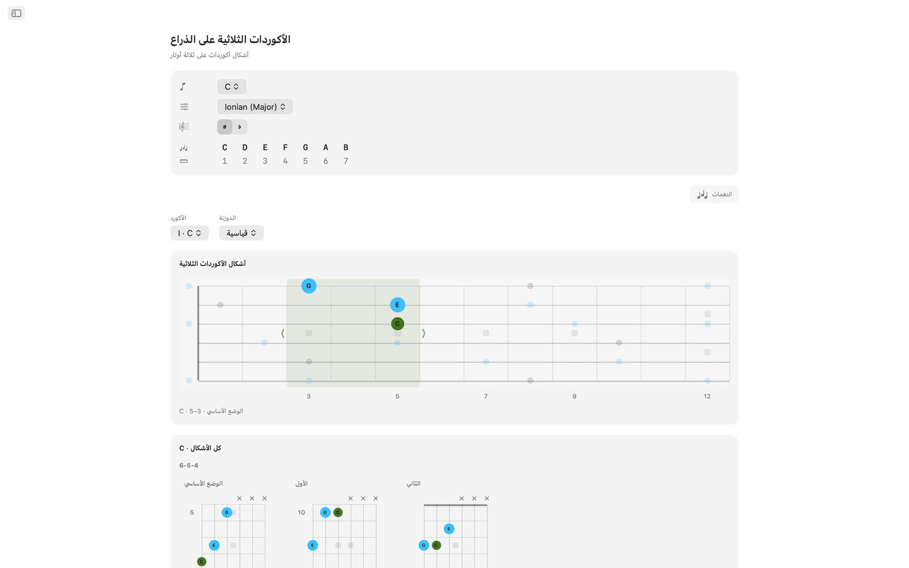
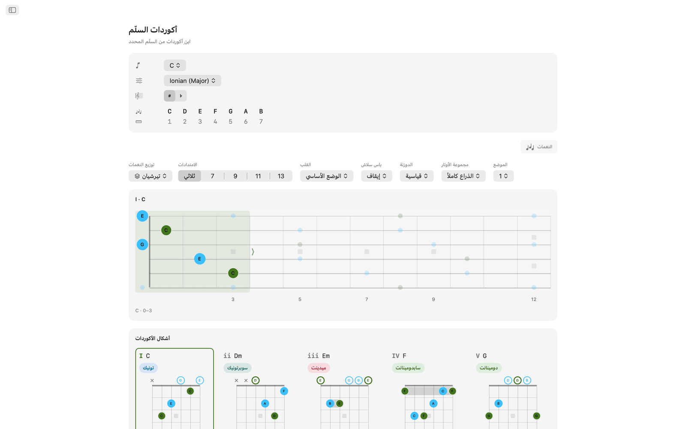
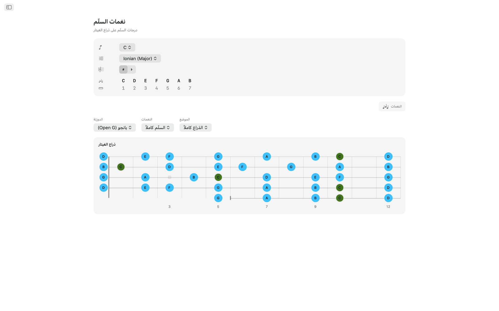
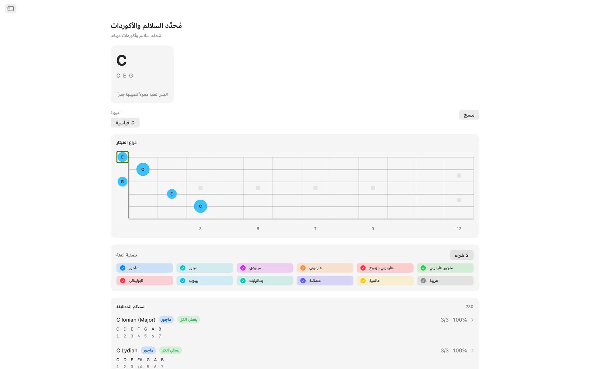
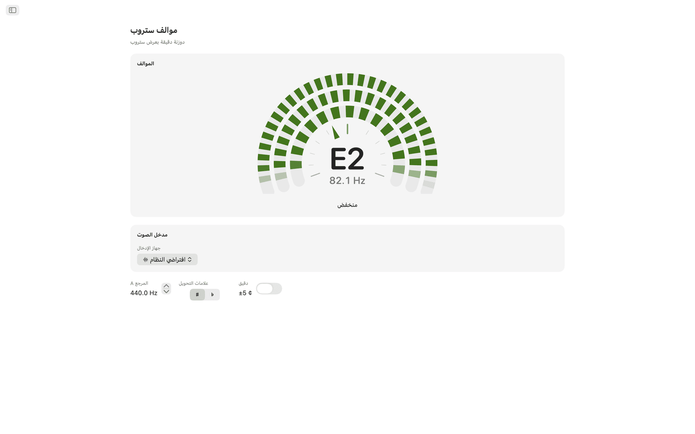
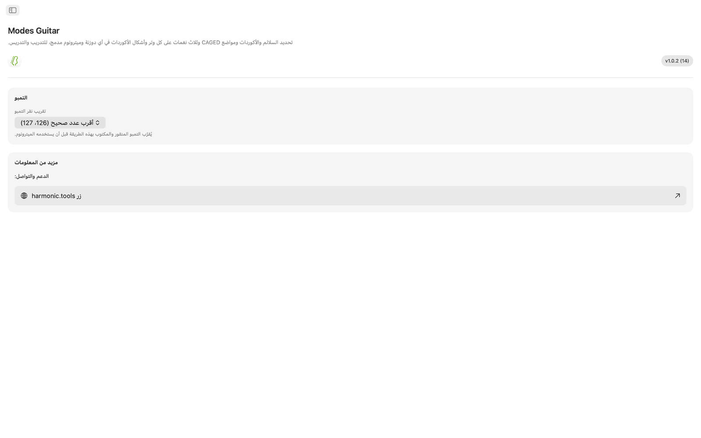

Modes Guitar لنظام macOS
Modes Guitar تطبيق لذراع الغيتار على جهاز Mac. انقر النغمات التي تضغط عليها لتعرف ما تعزفه، وافرد أي سلّم بمواضع CAGED أو بثلاث نغمات على كل وتر، وتصفّح أشكال الأكوردات القابلة للعزف بأي دوزنة، وتمرّن مع ميترونوم مدمج. وهو تطبيق بشريط جانبي، فيمكن أن يبقى بجانب DAW أو خطة الدرس.
- مُحدِّد السلالم والأكوردات مباشرة على الذراع
- مواضع CAGED وثلاث نغمات على كل وتر
- أشكال أكوردات قابلة للعزف بأي دوزنة
- 20 دوزنة، إضافة إلى دوزنتك المخصصة
- موالف ستروب مع اختيار واجهة الصوت والقناة
- ميترونوم للتمرين وعناصر واجهة مركز الإشعارات
لقطات الشاشة
تتوفر لقطات الشاشة بمظهرين فاتح وداكن يتبعان مظهر الموقع.









الميزات
- انقر النغمات التي تضغط عليها على الذراع ليسمّي Modes Guitar الأكورد لحظة بلحظة (ماجور ومينور وناقص وزائد وممتد ومعلّق وغيرها)، ويرتّب كل سلّم مناسب بحسب نسبة تغطيته للنغمات. صفِّ بحسب عائلة السلّم لتضييق القائمة، ثم انتقل إلى أكوردات ذلك السلّم.
- اختر جذراً وسلّماً فتضيء كل درجة من درجات السلّم على امتداد الذراع. بدّل إلى مواضع CAGED أو مقاطع ثلاث نغمات على كل وتر، واسحب الإطار صعوداً ونزولاً على الذراع لتغيير الموضع، وحدّد النغمات على الثلاثي أو السابعة أو البنتاتونيك أو السلّم الكامل.
- تحصل كل درجة من السلّم على قبضات أكوردات قابلة للعزف، مع علامات الأوتار المفتوحة والمكتومة ومؤشرات الباريه (barre) وعمود لأرقام الدساتين عندما يقع الشكل في أعلى الذراع. تنقّل بين المواضع على طول الذراع، واختر قلباً، أو ضع أي درجة من السلّم في الباس لأكوردات السلاش.
- يمكن تفكيك أي أكورد في المفتاح وإعادة بنائه على الذراع. يُعرض كل توزيع متقارب في شبكة من المخططات، مجمّعة بحسب مجموعة الأوتار، في الوضع الأساسي والقلب الأول والقلب الثاني. اختر واحداً فيظهر على ذراع الغيتار مع بقية نغمات الأكورد حوله، ويمكنك سحب الشكل صعوداً على الذراع لعزف القبضة نفسها في كل المواضع.
- تتوفر 20 دوزنة: قياسية وDrop D وDrop C وE♭ قياسية وDADGAD وOpen G وOpen D وسباعي الأوتار وباريتون وباس رباعي وخماسي الأوتار وأوكيليلي وبانجو (خماسي وتينور وبلكترم) ومندولين. تُعاد حسابات الأشكال والقبضات وأسماء النغمات للدوزنة التي تختارها، وتحتفظ إعادة الدوزنة بوضع أصابعك لتسمع ما يصبح عليه الشكل نفسه. وللدوزنة المخصصة اختر من 3 إلى 8 أوتار ودوزِّن كل وتر بالأذن، انطلاقاً من أي إعداد مسبق.
- موالف الستروب موالف ستروبوسكوبي. اعزف وتراً فتنجرف ثلاث حلقات من القطاعات في اتجاه عندما تكون منخفضاً وفي الاتجاه المعاكس عندما تكون مرتفعاً، وتثبت لحظة تصل إلى الطبقة الصحيحة، وهذا يُظهر فروقاً أدق بكثير مما تظهره الإبرة. وهو كروماتي بالكامل: يسمّي أي نغمة تعزفها، وتراً مفتوحاً أو نغمة مضغوطة، بأي دوزنة، ويُدوزن الغيتار والباس والأوكيليلي والبانجو والمندولين من القرص نفسه. اضبط A المرجع في أي قيمة من 415 إلى 466 Hz، وفعّل المقياس الدقيق للقراءة بدقة عُشر السنت، واعرض العلامات المحوّلة دييزات أو بيمولات. وعلى جهاز Mac تختار أيضاً واجهة الصوت وقناة الإدخال التي يستمع إليها، فيُدوزن الغيتار الموصول بالواجهة مباشرة من المقبس. يُحلَّل كل شيء على الجهاز ولا يُسجَّل شيء.
- يضم ميترونوم التمرين موازين وتقسيمات وسوينغ وتشديدات لكل نبضة وأربعة أصوات للنقرة ومستوى صوت واهتزازاً لمسياً قابلين للضبط، إضافة إلى تمبوهات سريعة وإعدادات مسبقة محفوظة للمقاطع التي تتمرّن عليها.
- أبقِ الميترونوم في مركز الإشعارات وابدأه أو أوقفه دون التبديل بين التطبيقات. وهناك أيضاً سلّم اليوم وأكورد اليوم لتتمرّن عليهما.
على جهاز Mac
- يعمل بالكامل على الجهاز: بلا حساب ولا إعلانات ولا تتبّع
- لا يحتاج إلى اتصال بالإنترنت
- مظهران فاتح وداكن في كل الشاشات
- تطبيق بشريط جانبي يبقى بجانب DAW أو خطة الدرس
- متوفر بـ 22 لغة
إمكانية الوصول
يعمل مع VoiceOver والتحكم بالصوت، ويمكن استخدامه من لوحة المفاتيح بمفاتيح الأسهم والمسافة.
Modes Guitar مجاني للتجربة لمدة 7 أيام. وبعد التجربة يكون الوصول الكامل عملية شراء لمرة واحدة، دون اشتراك.
مرجع ذراع الغيتار والدوزنة
مرجع للدوزنات والمواضع وأدوات الأكوردات والموالف وميزات الميترونوم في التطبيق.
الدوزنات
تُعاد حسابات الأشكال والقبضات وأسماء النغمات للدوزنة التي تختارها. وتحتفظ إعادة الدوزنة بوضع أصابعك لتسمع ما يصبح عليه الشكل نفسه. تُسرد النغمات من الوتر الأخفض إلى الأعلى.
| الدوزنة | النغمات (من الأخفض → إلى الأعلى) | الأوتار |
|---|---|---|
| قياسية | E A D G B E | 6 |
| Drop D | D A D G B E | 6 |
| Drop C | C G C F A D | 6 |
| E♭ قياسية | E♭ A♭ D♭ G♭ B♭ E♭ | 6 |
| DADGAD | D A D G A D | 6 |
| Open G | D G D G B D | 6 |
| Open D | D A D F♯ A D | 6 |
| سباعي الأوتار | B E A D G B E | 7 |
| باريتون | B E A D F♯ B | 6 |
| باس (4 أوتار) | E A D G | 4 |
| باس (5 أوتار) | B E A D G | 5 |
| أوكيليلي | G C E A | 4 |
| بانجو (Open G) | G D G B D | 5 |
| بانجو (Double C) | G C G C D | 5 |
| بانجو (Sawmill) | G D G C D | 5 |
| بانجو (Open D) | F♯ D F♯ A D | 5 |
| بانجو (تينور) | C G D A | 4 |
| بانجو (تينور أيرلندي) | G D A E | 4 |
| بانجو (بلكترم) | C G B D | 4 |
| مندولين | G D A E | 4 |
ابنِ دوزنتك الخاصة أيضاً: اختر من 3 إلى 8 أوتار ودوزِّن كل وتر بالأذن، انطلاقاً من أي إعداد مسبق.
مواضع ذراع الغيتار
افرد أي سلّم على الذراع وغيّر مقدار ما تراه منه. اسحب الإطار صعوداً ونزولاً على الذراع لتغيير الموضع.
أنظمة المواضع
المجموعات الفرعية للنغمات
أشكال الأكوردات
تحصل كل درجة من السلّم على قبضات قابلة للعزف بالدوزنة الحالية.
- تتضمن القبضات القابلة للعزف علامات الأوتار المفتوحة والمكتومة ومؤشرات الباريه وعموداً لأرقام الدساتين عندما يقع الشكل في أعلى الذراع.
- يمكنك التنقل بين الأشكال على طول الذراع.
- تتيح لك القلوب اختيار نغمة الأكورد التي تقع في الباس.
- ولأكوردات السلاش، ضع أي درجة من السلّم في الباس.
ثلاثيات على الذراع
فكّك أي أكورد في المفتاح وأعد بناءه على الذراع.
موالف ستروب
موالف ستروبوسكوبي لأي آلة وبأي دوزنة. يُحلَّل على الجهاز ولا يُسجَّل أبداً.
ميترونوم للتمرين
ميترونوم كامل للمقاطع التي تتمرّن عليها.
عناصر الواجهة
صِل إلى الميترونوم وسلّم اليوم وأكورد اليوم دون التبديل بين التطبيقات.